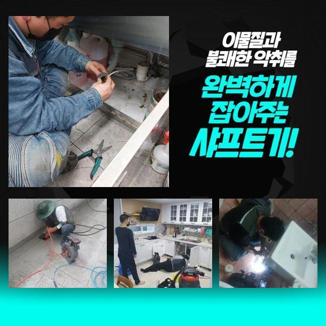
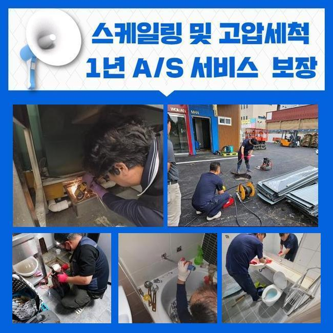
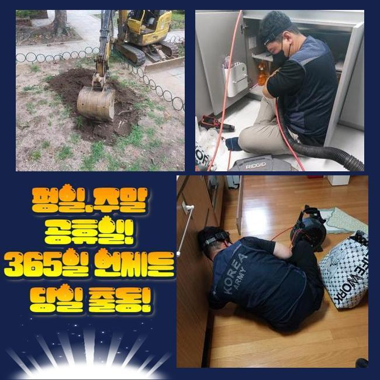
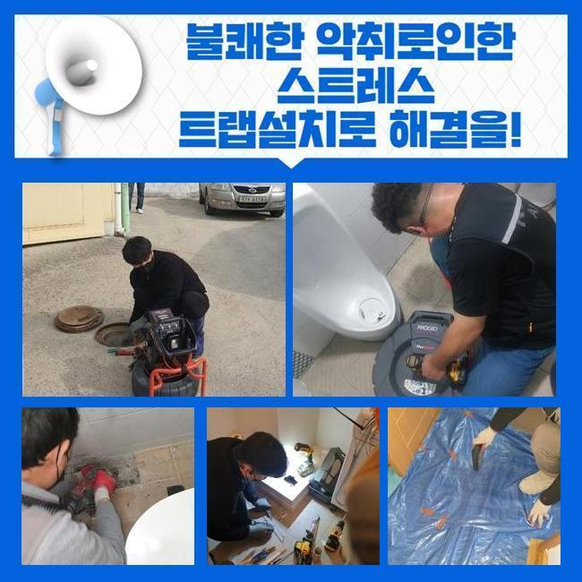
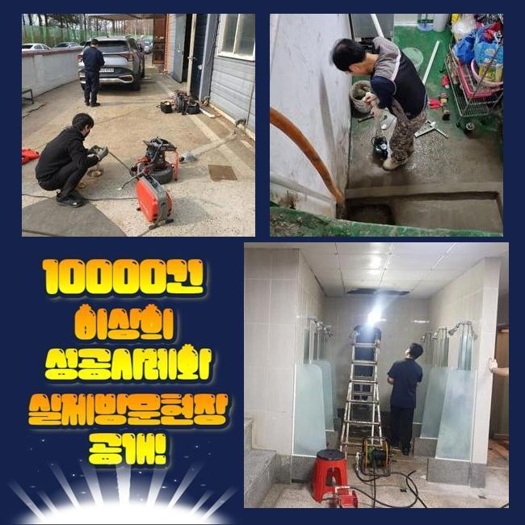
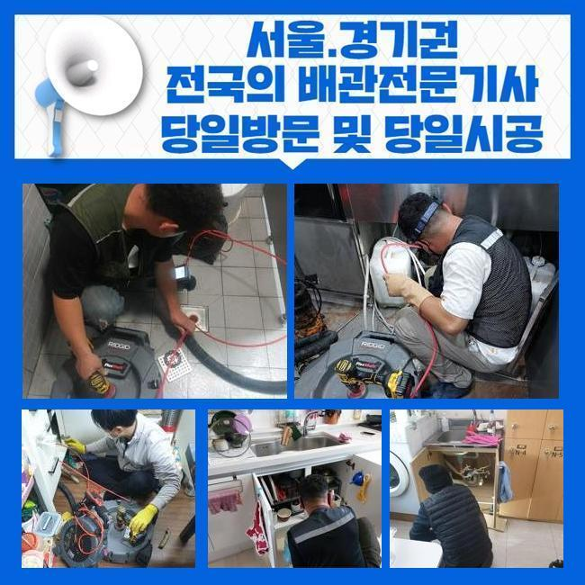

🏠 막계동씽크대역류 주암동 맨홀막힘 출장수리
용인 싱크대막힘 전문 시공 후기

📋 작업 개요
- 위치: 용인
- 서비스 유형: 싱크대막힘, 하수구막힘, 배관막힘, 맨홀막힘, 누수수리, 역류해결, 뚫는업체, 배관청소
- 작업 일시: 2024. 11. 6. 10:05
- 업체명: 하수구수사대 (010-5615-2118)
🔍 문제 상황
막계동씽크대역류 주암동 맨홀막힘 출장수리
이번에 가본 곳은 거실 화장실에서 느닷없이 샤워를 하다 구정물이 안내려가는 일이 생겨서 전화를 하셨어요
배수공쪽을 정리하고 시도해봤는데도 빠져나갈 징조가 없었으며 점진적으로 액체가 입구까지 차올라 범상치 않은 사태라 느끼셨다고 해요
그럴 때에는 희석제 같은걸 넣거나 구두주걱을 이용해서 통수를 시도하는 분들도 계시지만 배관깊이 오염물질이 고정되어 있는 경우 수월하게 처리하기 어려워요
화장실의 경우 상시로 쓰는 곳이니 여러가지 문제점이 나타날수 있고 수면위로 그 문제가 올라왔다면 주저하지 마시고 관리를 받으셔야 해요
아무생각없이 이것들을 방관해버린다면 구린내가 퍼지거나 화장실에 곰팡이까지 견뎌야 하는 상황에 이를수 있죠
금번의 세대는 전체적 문제점으로 문의하셨기에 시설물과 관계된 장비도 챙겨 출발했어요
문제점이 발현된 포인트가 어떤지에 의존하여 그것에 알맞는 기기가 선별되어야 해서죠
이에 대한 고가의 장비들을 소지한 저희팀은 막힘이나 역류문제는 거의다 해결해드려요
하수구막힘으로 방문하였더라도 물샘이 표출될 여지도 충분하고 그것에 의해 별도의 공정이 필요할수 있어서 우리팀은 언제나 위와 같은 채비를 이행중에 있죠
일단은 파이프에서 나타난 현상을 이해하려 배관 카메라를 사용하기로 했죠
내시경CCTV는 기다랗고 가느다란 형상으로 이루어져 있기에 슬러지가 많다고 하여도 탐색하는데 지장이 없습니다
조사해 보았더니 입구 바로 아래부터 이물이 잔뜩 체류하고 있었죠
내시경 기기의 내시경 기기의 섬세한 관찰로서서 오염물질을 들여다보니 배관벽에 붙어 있었고 일부분은 단단하게 변했다는걸 보게 됐죠

🔎 원인 분석
💡 전문가 진단: 정밀 진단 장비를 사용하여 슬러지의 고착 여부를 판명하고 타격/세척 작업을 실시했습니다.
이때문에 물빠짐 능력이 90%이상 소멸된것을 깨닫게 되었어요
거기에 더해 욕실바닥면에서는 오수가 역행하는 문제가 나타나는 것을 목견하였어요
해당하는 사태에선 망설임없이 수선을 이행해야 하죠
시간의 흐름에 그러하기에 고형물이 정리되지 않을뿐 아니라 오취까지 올라오게 된다면 훨씬 고단한 상황이 되기 때문이죠
찌꺼기의 특징이나 고착수준 등의 여러 내용들을 고려해서 석션기계와 샤프트기기를 갖췄어요
일단은 흡입기계를 가동시켜 처치하고자 하여서 기계를 가져와 시공을 실시해보기로 했어요
석션기계는 보통의 석션청소용품과 비슷하나 월등히 높은 작동능력을 보여주고 있어요
미미한 것들은 이걸로 힘들지않게 처치할수 있죠
그렇지만 오랜시간 누적되어 단단해진 부분들은 석션장비로 처치하기 힘들죠
그리하여 강력한 파쇄능력을 갖춘 플렉스샤프트를 활용하게 된거에요
신중하게 노폐물들을 갈아내고 석션기기를 가동해 오물을 제거했어요
해당하는 공정은 한두번의 시행으로 해결되지 않아요
틈틈이 잔재한 오염물질이 배관촬영기기에서 안보이는 순간까지 시행하여야 한답니다
그렇기에 수십번 거듭하여 제거했습니다
그걸 통하여 깨끗해진 내측을 확인할수 있었죠

🔧 작업 과정
요번에 작업한 건축물처첨 허다한 건축물에서 비슷한 고장이 나타나고 있죠
화장실과 개수대 등에 이물들이 유입되면서 생길수도 있지만 완공 이후에 전혀 청소를 안했다는 부분도 커다란 원인이라 말씀드릴수 있어요
수도를 틀면 소멸되는게 마땅하다 치부하는 의뢰인들이 많죠
그러한 내용은 배관 관리와 관련된 생각이 미비하다는 뜻입니다
이때문에 건축물을 짓고 난뒤 전혀 슬러지를 청소하지 않은 곳들이 상당히 많아요
그것들은 어느 순간이라도 말썽이 터질 가망을 알려주는거죠
그결과 별문제가 발생치 않았다 해도 방치기간이 길었다 판단한다면 정기적으로 청소관리를 받아보시는게 좋아요
한편 가정에 수선장비가 갖춰어졌다면 일상중 사태가 심화되었을때 감당할수 있을거라 판단하시는 분도 있죠
하지만 샤프트분쇄기는 강인한 힘을 보유하여 잘못하면 하수관이 부서질수가 있죠
특히 낡은 배관은 균탁이 발발할수 있으므로 충분한 기술력을 갖춘 자가 업무를 하는게 맞아요
그리하여 섣부르게 기기를 사용해서 막힘을 가중하는 활동은 자제할 필요가 있죠
잔재들을 말끔히 소쇄한 후에 안으로 이동해 제대로 뚫렸는지 확인했어요
위의 사항을 점검하니 구린내 등등의 문제가 사라지고 신속히 내려가는 걸 목도했죠
마무리하는 개념으로 유분이 적은 잔재들을 일부 투입하여서 제대로 내려가는지 테스트해 목도했죠
보편적으로 이와 같이 잔재를 넣는 건 하수관을 유지하려는 관점에선 바람직하지 않죠
그렇지만 적절히 시공되었는가를 파악하는 단계로 안전조치를 다하여서 수행한 것이라 말썽을 촉발하진 않는답니다
그로서 흡사한 찌꺼기들이 관 안에 침투하였을때 빠르게 없어지리라는걸 예측할수 있죠
하수관에 장애가 일어났다면 테크닉적으로 완성도있게 수선하는 업체에 의뢰해야 조속히 상황을 없애나갈수 있어요
이따금 배수트러블이 나타났을때 곧바로 사용을 해야된다는 연유로 자체수리를 하려고 계획하시는 분들도 있답니다
하지만 이 경우 오염물질이 더욱더 하단쪽으로 이동해서 난해한 형편을 유발할수도 있어요
타회사에서 진행하였다가 증상이 도져서 조치가 절박한 고객분에게도 방문하여 해결해 드려요
80% 이상은 원인증상이 남은채로 시공을 마무리했던 사례로 생각할수 있습니다
그러므로 한달 두달이 지나며 잔재들이 점차적으로 증대되었으며 이를 통해서 통수문제가 발생한거라 여길수 있답니다


✅ 작업 완료
이때문에 원인을 조사하는 전문가에게 의뢰하시는게 바람직하며 적합한 도구들이나 경험이 충분한지 확인하시는 방안도 생각해볼수 있겠죠
우리팀은 사후조치도 엄격히 실시하고 있죠
혹여라도 저희팀에게 수선을 의탁하시고 재발하는 일이 생겼다면 확인하는대로 즉시 정리해드려요
하지만 손님분의 실수에 의한 장애들은 견적이 요구되기도 한다는 사실을 말씀드려요
저희들은 언제나 솔직하게 정황을 조사해드리고 상황을 신속하게 처리합니다
수선이 요망된다면 저희에게 즉시 전화해 주시길 바라봅니다




⚠️ 베란다 누수 및 방수 관리 방법
- ✅ 비가 많이 올 때 창틀 주변이나 아래층 천장에 얼룩이 생기는지 정기적으로 확인해 보세요.
- ✅ 우수관 주변 실리콘 마감이 들뜨거나 깨진 틈새가 있는지 손상 여부를 수시로 체크하세요.
- ✅ 베란다 바닥 타일의 줄눈(메지)이 소실되면 그 틈으로 물이 침투하여 누수가 유발됩니다.
- ✅ 누수 의심 증상 발견 시 방치하면 아래층 손실이 커지므로 즉시 전문가의 진단을 받으십시오.
💡 핵심 정리
- 확실한 장비 작업(내시경 점검 및 샤프트 스케일링)으로 원인을 뿌리 뽑습니다.
- 작업 후 1년 이내에 동일한 부위 재발 시 100% 무상 A/S 서비스를 보장합니다.
- 서울 · 경기 · 인천 전 지역에 24시간 언제든 긴급 출동할 수 있도록 항시 대기 중입니다.
❓ 자주 묻는 질문 (FAQ)
🚨 용인 싱크대막힘 문제로 고민이신가요?
정확한 원인 진단과 확실한 시공으로 재발 없는 해결을 약속드립니다.
24시간 긴급 출동 | 서울 · 경기 · 인천 전지역 | 1년 내 재발 시 무상 A/S